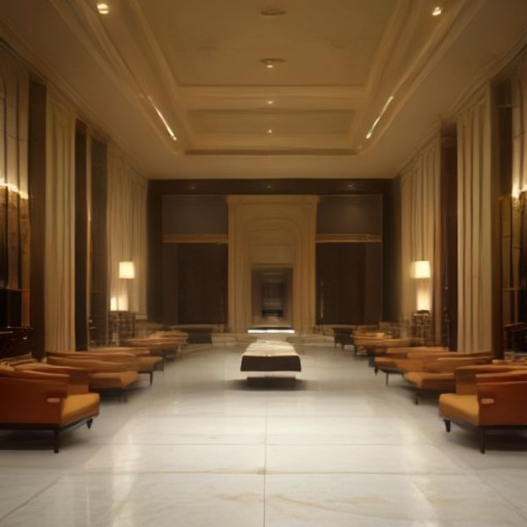
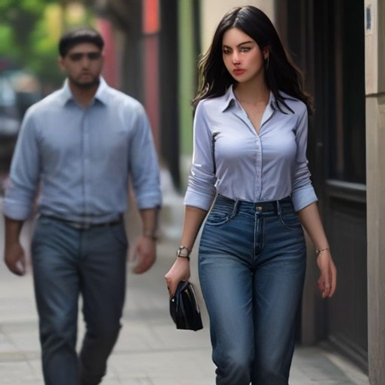
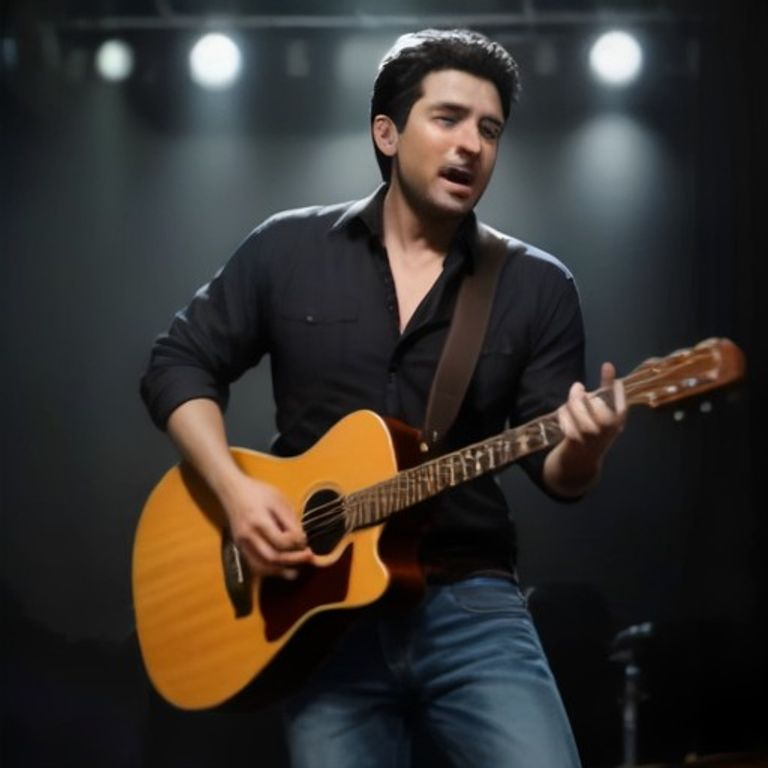
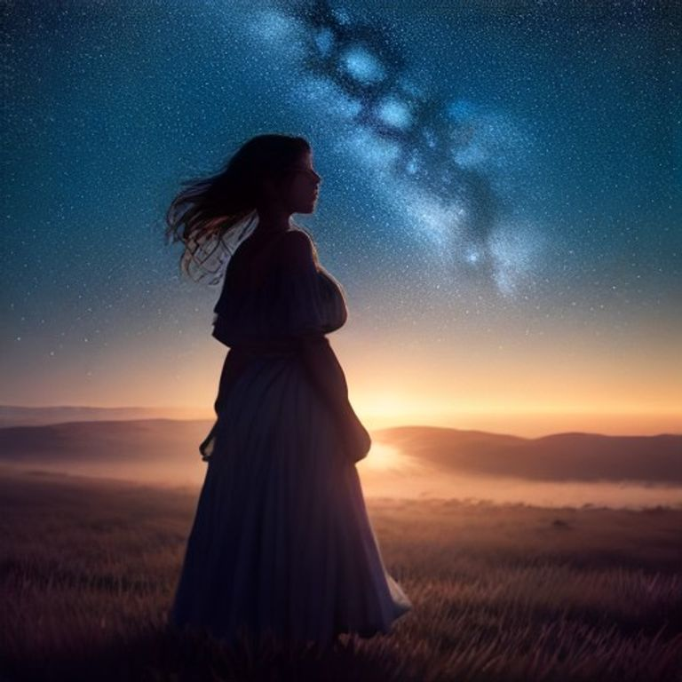
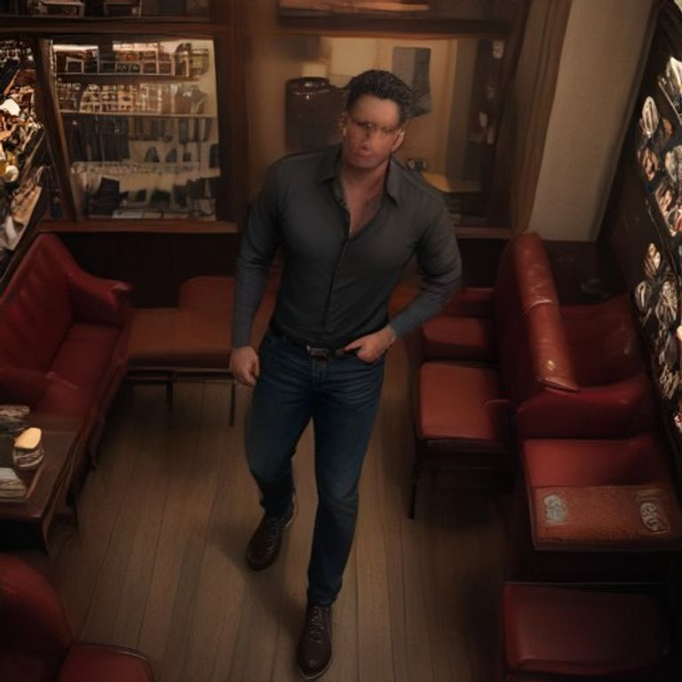
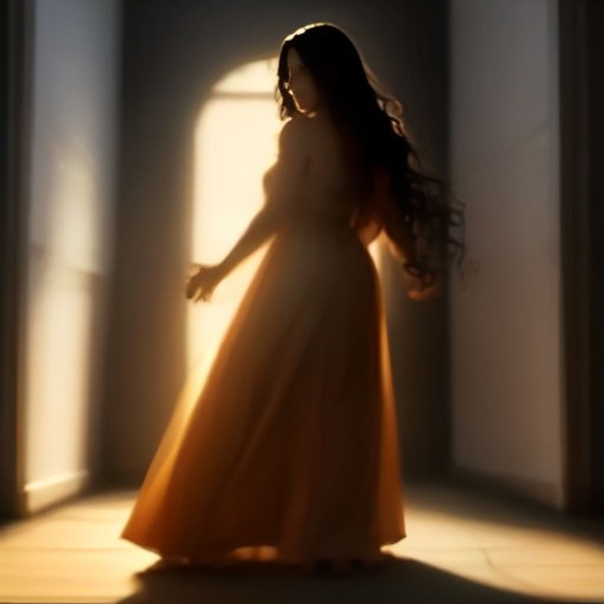
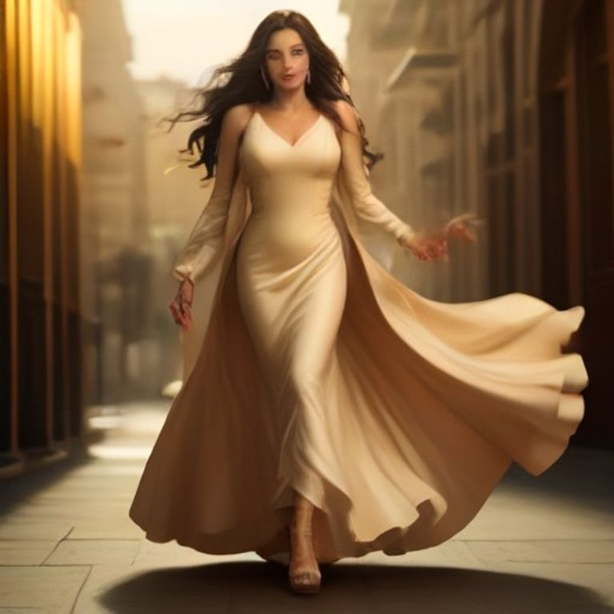
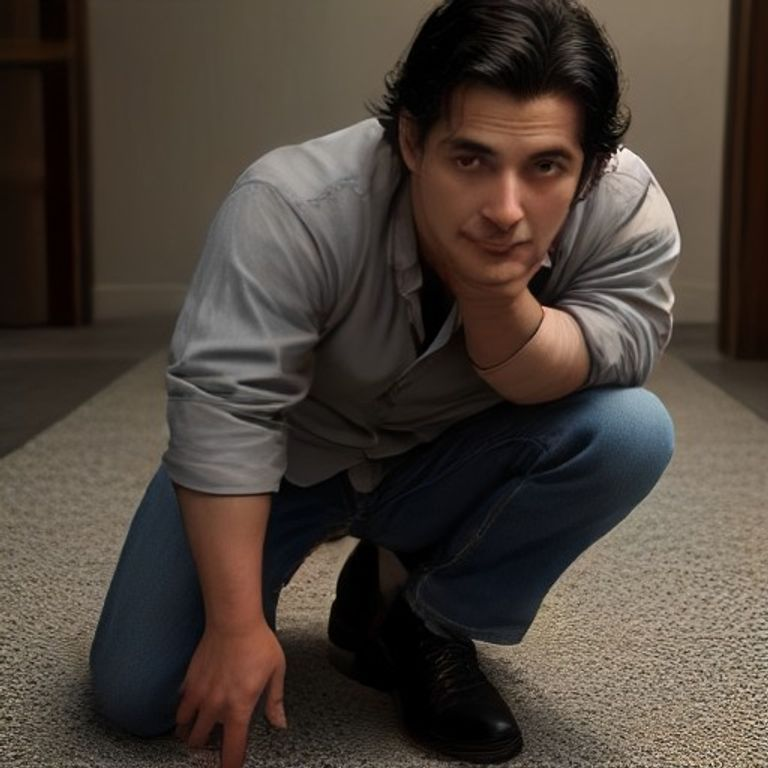
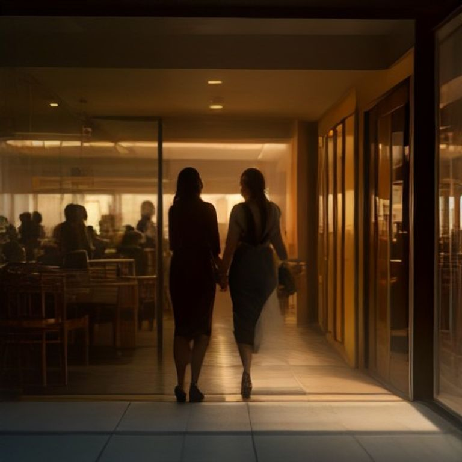
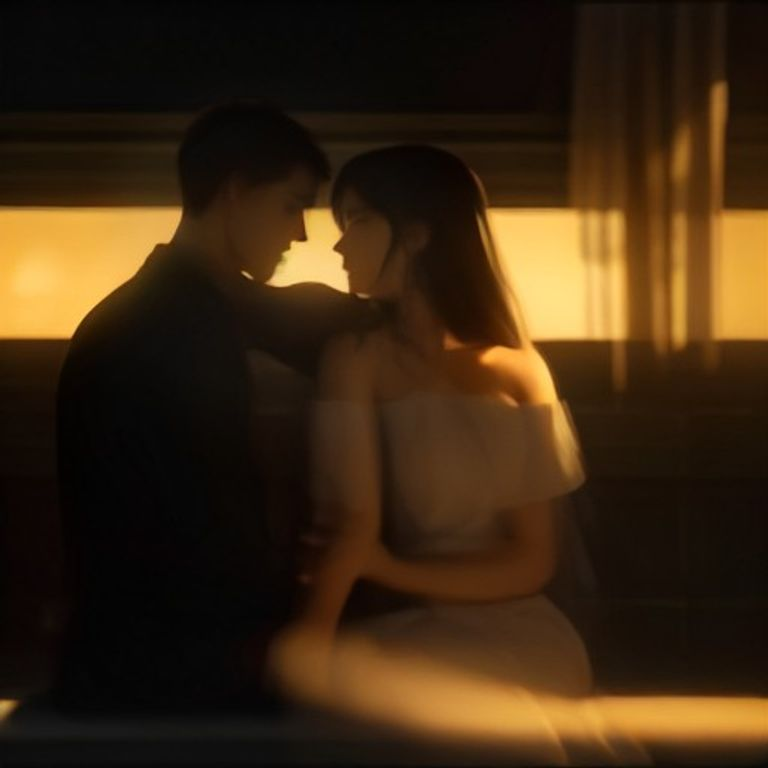

🎵 "¿Quién Es Ella?"
🎤 Fredy González
Música Llanera / Sabanera — Documentación de Producción del Videoclip
Progreso: 70% completado
"¿Quién Es Ella?" — Fredy González — Música Llanera / Sabanera
34 líneas — 3 versos + 2 coros + outro
COMPLETADOFredy González
DEFINIDOMúsica Llanera / Sabanera Venezolana
DEFINIDOAproximadamente 2:55 minutos
ESTIMADOLa historia: fidelidad, tentación y amor verdadero en una zapatería
André espera a su esposa en una zapatería elegante. Ella aún no ha llegado.
6-9 mujeres lo provocan: se sientan, se quitan zapatos, le tocan el cabello.
André es llanero coqueto pero no cede. Su corazón es de su esposa.
Visita a cada mujer y les regala una caja de zapatos. Generosidad.
Elenco del videoclip
| Personaje | Descripción | Vestuario | Estado |
|---|---|---|---|
| André (Fredy) | Llanero coqueto, fiel, esperando a su esposa | Camisa elegante, jeans, zapatos bonitos | OK |
| La Esposa | La que él ama, llega al final. La más bella. | Vestido elegante, tacones | OK |
| Mujer 1 | Se sienta, se quita zapatos, se turba | Por definir | OK |
| Mujer 2 | Le toca el cabello, hace conversación | Por definir | OK |
| Mujer 3 | Pide zapatos, pasa frente a él | Por definir | OK |
| Mujer 4-6 | Más mujeres que llegan y provocan | Por definir | OK |
| Mujer 7-9 | Máxima provocación, se sientan encima | Por definir | OK |
Espacios de filmación
Narrativa del videoclip
André llega solo a la zapatería. Se sienta. Espera.
Las mujeres empiezan a llegar y provocarlo.
Emoción: Expectativa, curiosidad
6-9 mujeres lo provocan activamente.
Se sientan, tocan, hablan, pasan frente a él.
André coquetea pero mira la puerta.
Emoción: Tentación, conflicto, deseo
La esposa entra (RALENTIZADO 120fps).
Se sienta, conversan, beso.
Él le pone el zapato. Las mujeres se van.
Emoción: Amor, felicidad, cierre
Cada segundo de la canción con qué planos usamos
| Tiempo | Letra / Audio | Acción en Pantalla | Plano de Cámara |
|---|---|---|---|
| 0:00 - 0:05 | Intro instrumental | Zapatería vacía, se encienden las luces | Plano general cenital |
| 0:05 - 0:12 | Intro | André abre la puerta y entra solo | General → Medio |
| 0:12 - 0:18 | Intro | Camina por la zapatería, mira zapatos | Travelling siguiéndolo |
| 0:18 - 0:25 | Intro | Se sienta en el sillón del centro | Medio → Detalle (sentarse) |
| Tiempo | Letra | Acción | Plano |
|---|---|---|---|
| 0:25 - 0:30 | "¿Y cómo es ella?, me preguntan mis amigos" | André sentado, sonriendo, recuerda | Primer plano (cara) |
| 0:30 - 0:35 | "únicamente les digo: solo ternura y pasión" | Flashback rápido: ella sonriendo | Plano medio ella |
| 0:35 - 0:40 | "¿Que si es bonita?, me preguntan y les digo" | La puerta se abre, entra Mujer 1 | General puerta |
| 0:40 - 0:45 | "mi morena es lo más lindo de toda la creación" | Mujer 1 se sienta a su lado, lo mira | Contraplano André ↔ Mujer 1 |
| Tiempo | Letra | Acción | Plano |
|---|---|---|---|
| 0:45 - 0:50 | "¿Que cómo es ella? Que ella es la más bella" | André de pie, canta a cámara, zapatos de fondo | Medio André cantando |
| 0:50 - 0:55 | "que es como una estrella, que ella es la doncella" | Flashback: ella caminando bajo estrellas | General nocturno |
| 0:55 - 1:00 | "que marcó sus huellas en la suave arena de mi corazón" | Pies caminando en arena, huellas | Detalle pies |
| 1:00 - 1:05 | "que no conoce de envidia, mucho menos de traición" | André sonríe, vuelve a zapatería | Primer plano cara |
| Tiempo | Letra | Acción | Plano |
|---|---|---|---|
| 1:05 - 1:10 | "¿Que si es llanera? Que es muy sabanera" | Mujer 2 llega, se sienta, provoca | Medio llegada |
| 1:10 - 1:15 | "que es como palmera, que su cabellera" | Ella se quita el pelo, pelo al viento | Detalle cabello |
| 1:15 - 1:18 | "es la que desvela mi sentimiento lleno de ilusión" | André la mira, sonríe, coquetea | Contraplano |
| 1:18 - 1:20 | "que si una noche me deja, me muero al salir el sol" | André mira la puerta, espera | Medio + mirada |
| Tiempo | Letra | Acción | Plano |
|---|---|---|---|
| 1:20 - 1:25 | "¿Y quién es ella?, me preguntan por la calle" | Mujer 3 entra caminando por la calle | General exterior |
| 1:25 - 1:30 | "mi morena es el detalle más lindo que Dios me dio" | Entra a zapatería, lo busca con la mirada | Tracking detrás de ella |
| 1:30 - 1:35 | "Es atractiva, seductora y sensitiva" | Se sienta cerca, le toca el brazo | Medio + detalle mano |
| 1:35 - 1:40 | "me enseñó que toda falta viene huyéndole a un perdón" | André se turba, pero resiste | Primer plano cara |
| Tiempo | Letra | Acción | Plano |
|---|---|---|---|
| 1:40 - 1:45 | "Tiene un cuerpazo de aquellos que incitan a darle un abrazo" | Mujer 4-5-6 llegan, rodean a André | General: 3 mujeres |
| 1:45 - 1:50 | "como un espejito brillan sus ojazos" | Plano de ojos brillando (espejo) | Detalle ojos |
| 1:50 - 1:55 | "en los que de tarde, cuando hay arrebol" | Flashback: cielo atardecer rojizo | General cielo |
| 1:55 - 2:00 | "se ve reflejado el llano y hasta llanera es su voz" | Reflejo en espejo/lago | Reflejo |
| 2:00 - 2:05 | "Consentidora, es la más bonita, fiel y encantadora" | Todas las mujeres alrededor, máxima tensión | Cenital: André rodeado |
| 2:05 - 2:08 | "yo la quiero mucho, dice que me adora" | André se levanta, busca la puerta | Medio: de pie |
| 2:08 - 2:10 | "mi morena es la que carga loquito a mi corazón" | La puerta se abre, silueta dorada | General puerta |
| Tiempo | Letra | Acción | Plano |
|---|---|---|---|
| 2:10 - 2:13 | "¿Que cómo es ella? Que ella es la más bella" | LA ESPOSA ENTRA — Luz dorada, ralentizado | ⭐ 120fps General |
| 2:13 - 2:17 | "que es como una estrella, que ella es la doncella" | Camina hacia André, todo ralentizado | ⭐ 120fps Tracking |
| 2:17 - 2:20 | "que marcó sus huellas en la suave arena de mi corazón" | Se sienta a su lado, se miran | ⭐ 120fps Medio |
| 2:20 - 2:23 | "que no conoce de envidia, mucho menos de traición" | Él le toma la mano | ⭐ 120fps Detalle manos |
| 2:23 - 2:25 | — | André se arrodilla | ⭐ 120fps Medio |
| 2:25 - 2:28 | — | LE PONE EL ZAPATO EN EL PIE | ⭐ 120fps Detalle zapato |
| Tiempo | Letra | Acción | Plano |
|---|---|---|---|
| 2:28 - 2:32 | "¿Que si es llanera? Que es muy sabanera" | Se besan — ralentizado | ⭐ 120fps Primer beso |
| 2:32 - 2:36 | "que es como palmera, que su cabellera" | Las mujeres miran, reaccionan | Medio: grupo mujeres |
| 2:36 - 2:40 | "es la que desvela mi sentimiento lleno de ilusión" | Expresiones: "ay no", "está casado" | Primer planos caras |
| 2:40 - 2:45 | "que si una noche me deja, me muero al salir el sol" | Una por una se van | General: salen |
| Tiempo | Letra | Acción | Plano |
|---|---|---|---|
| 2:45 - 2:48 | "¿Que cómo es ella? Que ella es la más bella" | Zapatería vacía, solo ellos dos | General |
| 2:48 - 2:50 | "que es como una estrella, que ella es la doncella" | Se sientan juntos, brazo alrededor | Medio |
| 2:50 - 2:53 | "que marcó sus huellas en la suave arena de mi corazón" | Ella apoya cabeza en su hombro | Medio cerrado |
| 2:53 - 2:55 | — | Se miran, sonríen. FUNDIDO A NEGRO. | Fundido final |
22 imágenes generadas con estilo llanero venezolano — André (40 años) y su esposa (35 años)

Zapatería elegante al atardecer, sillón al centro
Plano general cenitalLlega solo, mira los zapatos
General → MedioEn el sillón del centro, espera
Medio → DetalleSe sienta, se quita zapatos, se le cae
ContraplanoLe toca el cabello, coquetea
Close-up
Camina frente a él, provocadora
Tracking
Rodeado de zapatos, energía
Medio gimbal
Ella camina bajo el cielo estrellado
General nocturnoPies caminando, huellas en la arena
Detalle pies
6-9 mujeres, máxima provocación
CenitalSus ojos reflejan el llano
Detalle ojosAtardecer en los llanos venezolanos
General paisajeMira la puerta, espera a alguien
Medio + mirada
Silueta de ella en la entrada
General contraluz
RALENTIZADO 120fps — Ella llega
⭐ 120fps TrackingSe sientan, se miran, sonríen
⭐ 120fps Medio
Se arrodilla, le pone el zapato
⭐ 120fps DetalleSe besan, ralentizado
⭐ 120fps Beso"Ay no, está casado, me voy"
Medio grupo
Una por una, salen derrotadas
General salidaJuntos en la zapatería vacía
General romántico
Silueta, luz se apaga
Fundido finalDibujar los planos de cada escena con referencias visuales.
Colores, iluminación, vestuario, movimiento de cámara.
Cronograma, equipo, locaciones, presupuesto.